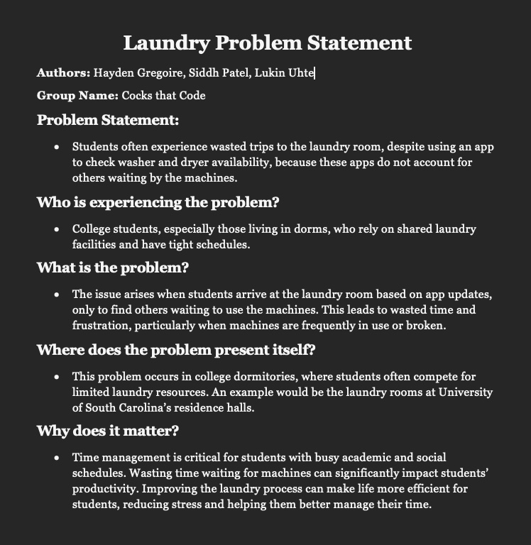
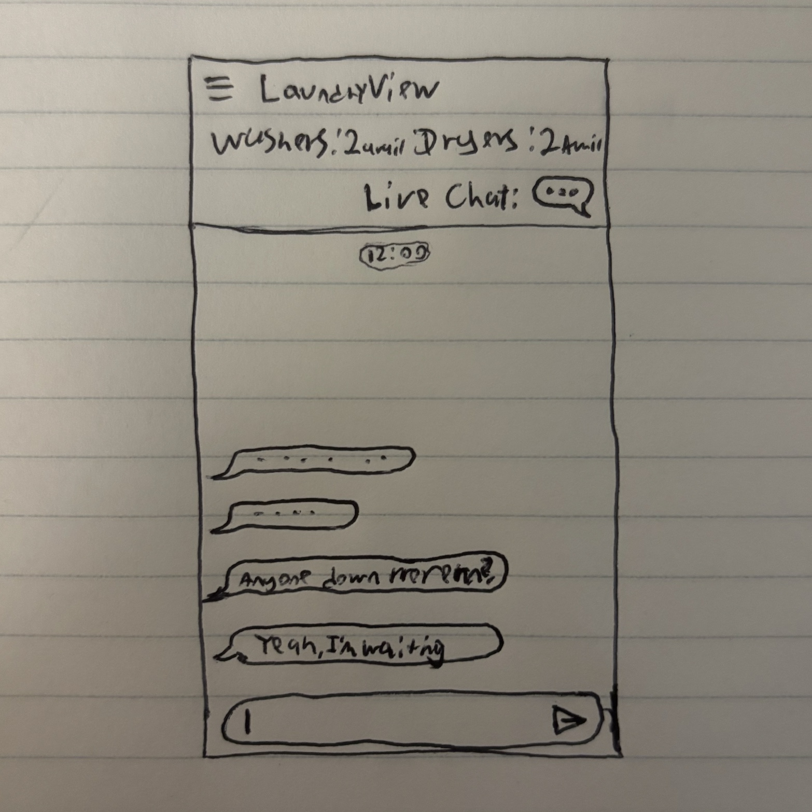
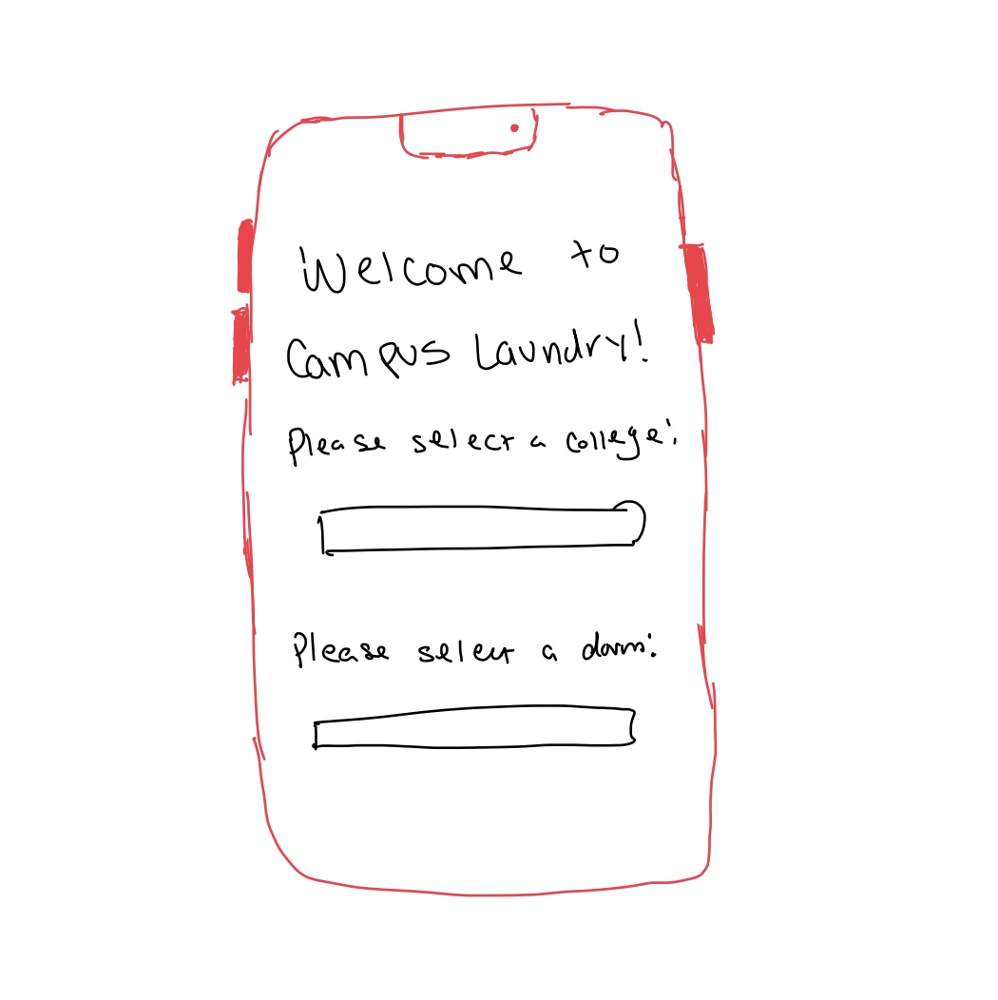
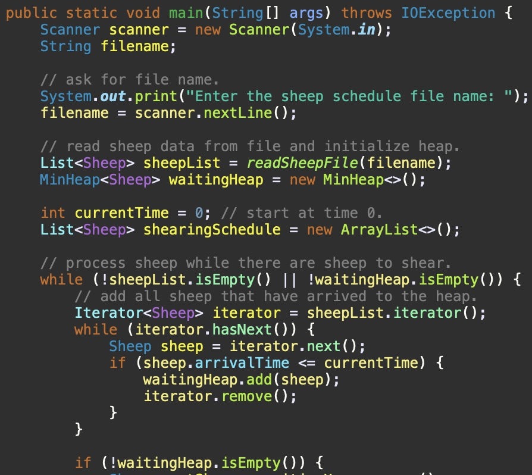

Problem Statement
Students often experience wasted trips to the laundry room, despite using an app to check washer and dryer availability, because these apps do not account for others waiting by the machines.
Affinity Diagram

This Affinity Diagram categorizes ideas related to the challenges students face when using laundry room apps. It highlights key areas that aim to enhance the overall laundry experience and minimize wasted trips.
Solution Sketches
These sketches represent three new features for improving the laundry room experience.
Prototype Sketches
These prototype sketches show how the user can interact with features within the app, specifically the live chat feature for students waiting on washer or dryer availability.
Algorithmic Design II Programs
This repository contains some programs created in CSCE 146, displaying experience in the Java programming language.